Misc. Palace — 60s Trailer · Generated Storyboard
Page 1 / 3 · panels 1–4
Shot 10:00–0:03
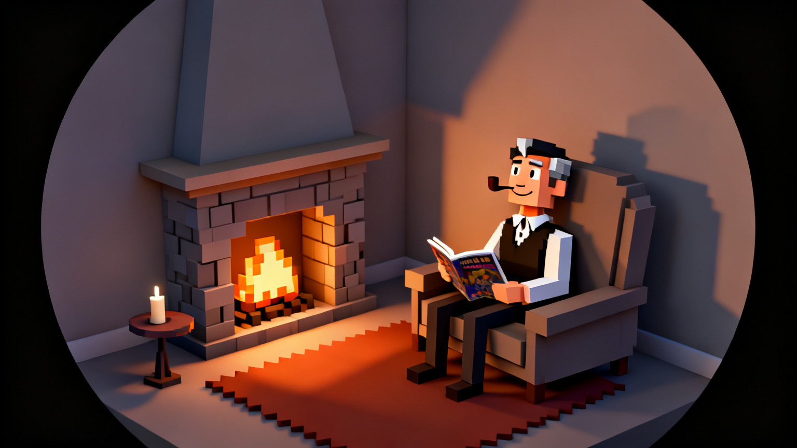
Open on black. A vignette/iris lifts over 1–2s to reveal the warm room. Fireplace amber, lower-left. Slow gentle orbit. Cut to mid-shot: German in the armchair, bubble pipe, comic book, candle and side table. He glances up and notices us — small knowing smile.
German (VO)"Welcome to the Miscellaneous Manor. It can get pretty scary out there, so much doom filled, endless scrolling…"
Shot 2 · b0:03–0:10
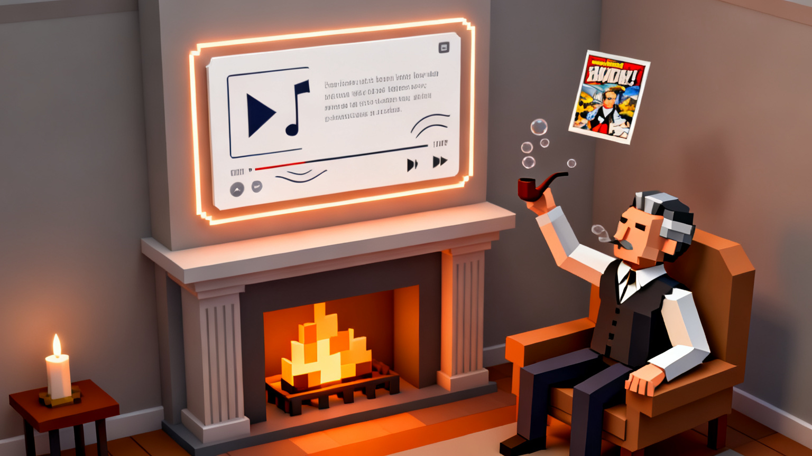
The comic lifts from his hands, swirls (~1.5s) and morphs into a floating preview card hovering above the fireplace. Sound lines radiate. Slow push-in until card fills frame.
German (VO)"…We think the internet could use some warmth and a little charm."
Shot 30:10–0:18
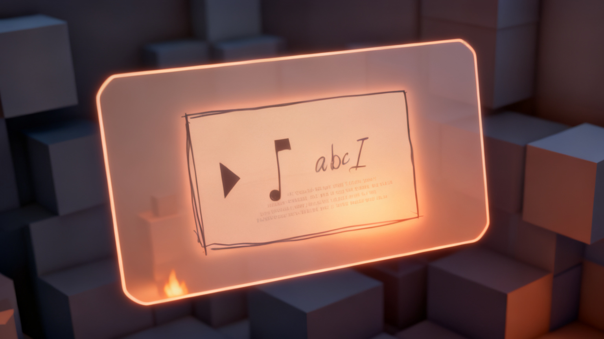
Close-up of the preview card. It floats centered, framed with a soft glow. A quiet moment to take it in — nostalgic, inviting.
German (VO)"Someone sent me this song, and it reminded me of a comic book I once had."
Shot 40:18–0:27
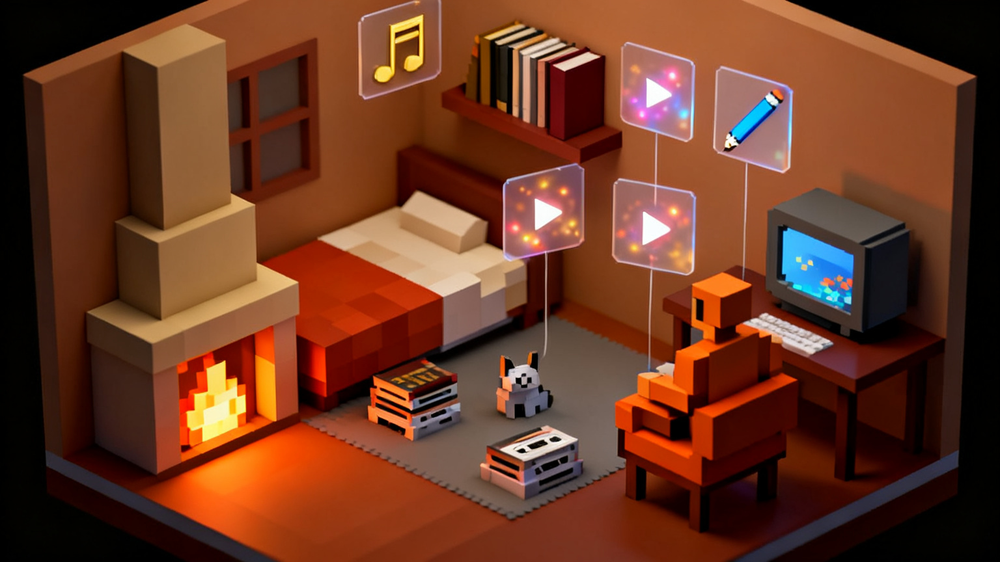
CONCEPT
Camera orbits up around the room. Objects are live: clicking opens previews above. Soft category icons fade in over clusters (music note, book, pencil, toy).
German (VO)"I've kept all my digital treasures, all in one place."
Misc. Palace — 60s Trailer · Generated Storyboard
Page 2 / 3 · panels 5–7a
Shot 50:27–0:35
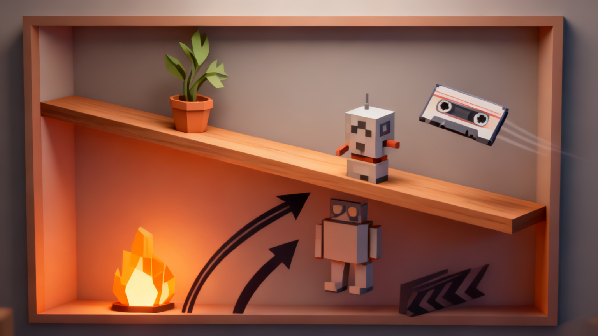
Snappy montage, 4–5 placements at 0.75–1.5s each. Plant, robot, cassette arc onto the shelf and settle with a bounce. Tactile SFX only — no UI beeps.
German (VO)"What would your miscellaneous palace look like?"
Dialogue may span between Shots 5 and 6.
Shot 5b0:35–0:40
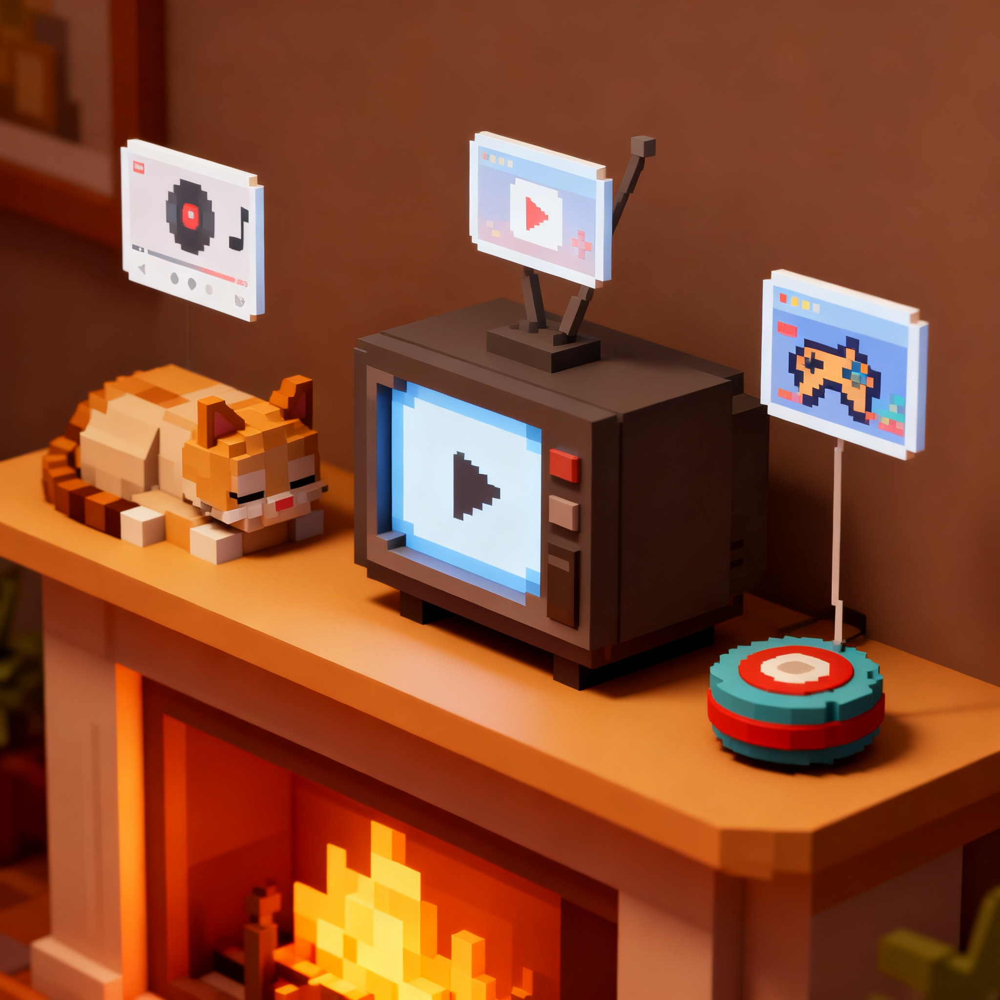
Zoomed-in detail shot. Three objects on a shelf ready for interaction: sleeping cat, CRT TV, yo-yo. Preview cards float above each when clicked — music player UI above cat, play button above TV, retro game above yo-yo. Items remain static on shelf.
Interactive moment showing what previews look like when hovering over shelf items.
Shot 60:40–0:53
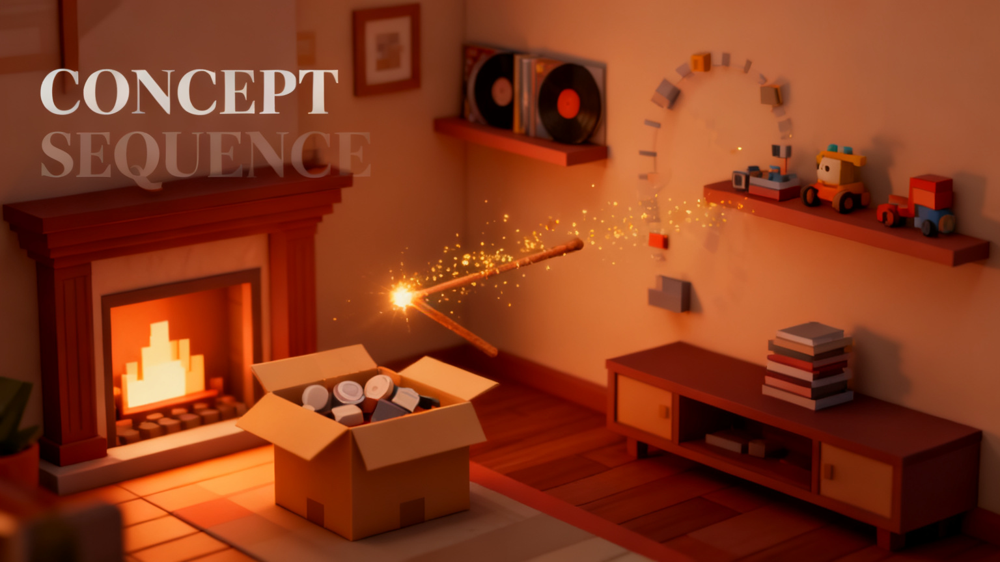
CONCEPT SEQUENCE
God's-eye view. A box of imported bookmarks opens, a wand waves, and objects curve out to their thematic zones and settle.
Label "CONCEPT SEQUENCE" visible on screen — this is aspirational, not a shipped feature. Dialogue from Shot 5 may continue here.
Shot 7a0:48–0:53
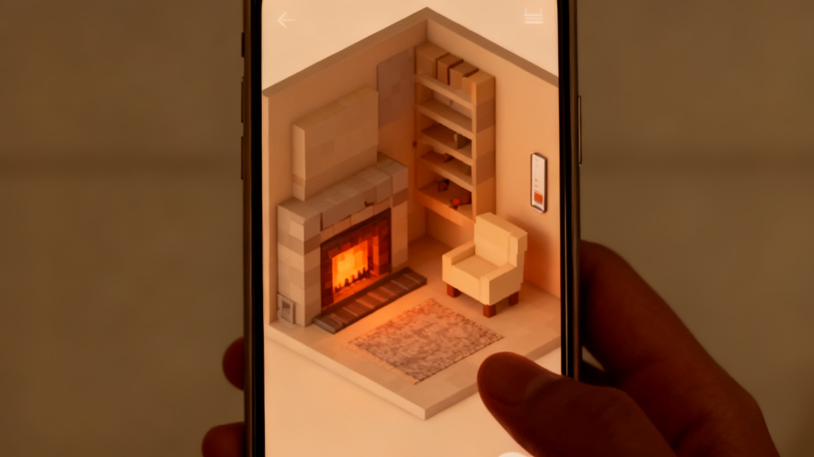
Phone / web view. The room on a handheld screen at reduced scale, UI around it, isometric angle intact.
German (VO)"Venture out and see what others have to share…"
Show only the phone displaying the web app — no hand holding it.
Misc. Palace — 60s Trailer · Generated Storyboard
Page 3 / 3 · panels 8–11
Shot 7b0:53–0:58
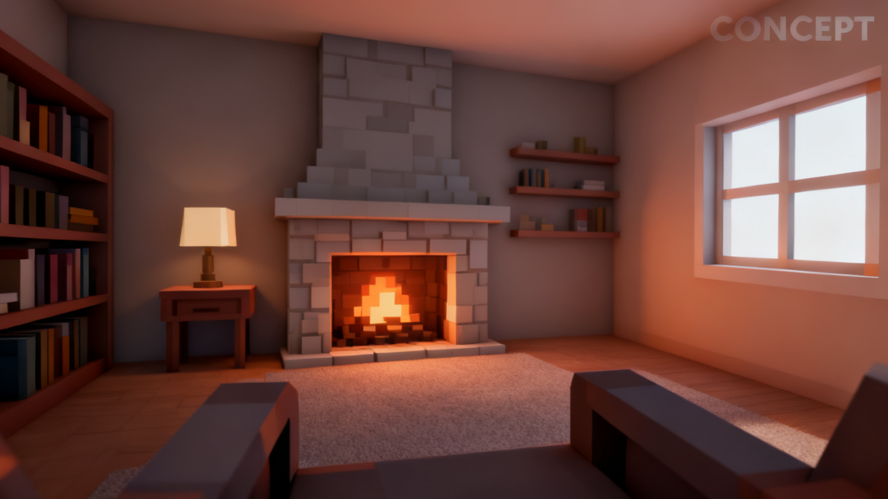
REAL VR CAPTURE CONCEPT
First-person headset POV, seated. Head turns left → forward → right across ~35°. Objects at human scale, fireplace looming and warm.
Must be genuine headset footage. Do not fake or composite.
Shot 7c0:58–1:02
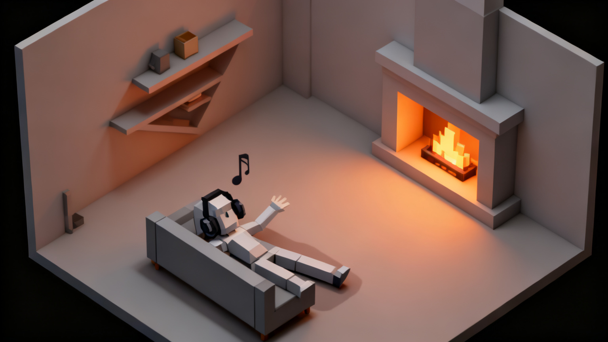
Isometric 3/4 third-person. The avatar lounges in headphones, relaxed, gently bobbing to music. Room wraps around them.
Goal: ownership and comfort in a space that's yours.
Shot 81:02–1:14
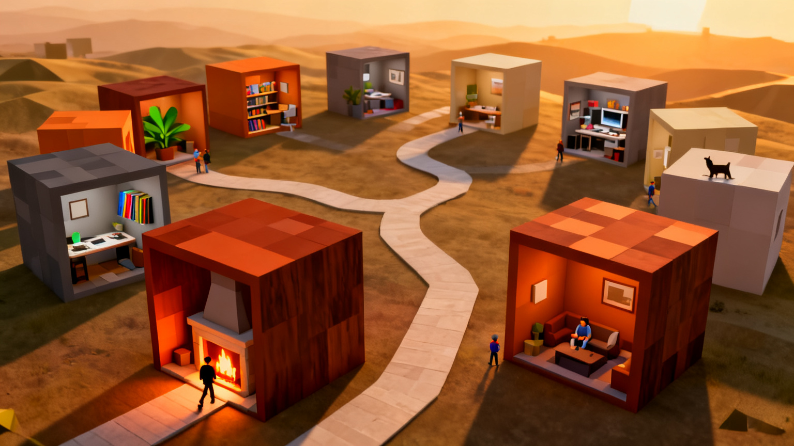
CONCEPT
Avatar heads for the door. Camera pulls back and tilts up revealing the neighbourhood: voxel rooms joined by winding paths, golden-hour light. Quick pans across rooms with distinct personalities (plants, music, work, cozy).
There is a lot out here, and it belongs to people.
Shot 9 · End card1:14–1:18
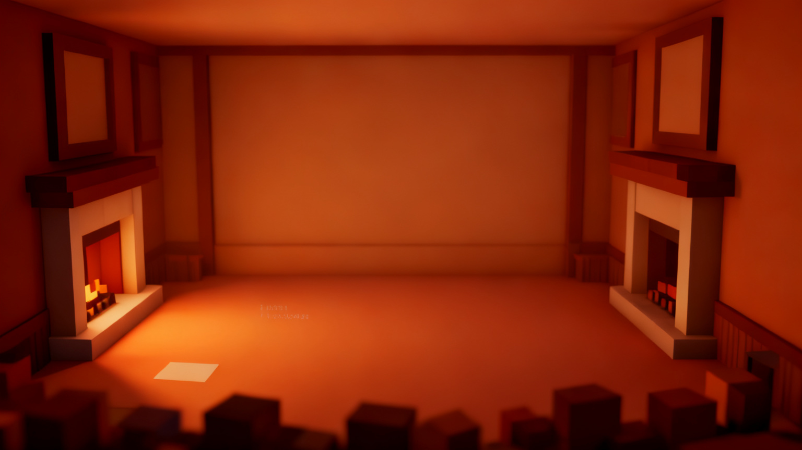
Static card on warm burnt-amber to rust gradient. Clean negative space with room for titles, tagline, CTA and QR/URL. Held 4s for music resolution.
German (VO)"Try it now on Miscellaneous Manor."
Titles and QR/URL to be layered over as real HTML text. No placeholders.
11 shots (11 panels)
Runtime ~75s — trim Shots 6–8 by ~15s for 60s
Seed: 72501 (pinned for character/room consistency)